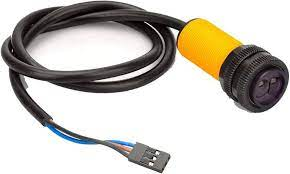

work in progress!
I hope to make an overview of the full systems within the robot! dont judge yet. it uses :nutshell to make expandable explanations
This, the :roboRIO, is the “brains” of the robot. We upload code to it before a match, and during a match it will revieve inputs from the driver through the :radio. The roboRIO knows its position on the field and whether it has a game piece or not. It will process the inputs and control the motors.
Here’s a diagram on how the battery powers the robot! We’ll start with

A 12v battery powers the robot. Its important that we :take care of our batteries
The battery connects to the PDH/PDP with a breaker in between. The :breaker is the on switch of the robot. Turn it on by pressing
The :PDH/PDP splits the power into many channels. Each motor connects to one of these channels with thick red and black :wires. Each of those channels has a fuse, so if there is a surge of power the fuse will pop instead of it damaging a motor.
Some robot components require much less power than the motors. The :MPM has channels similar to the PDH, but provides channels for small power. Devices that connect to the CAM are :beam breaks, :N100s, :CANcoders, and the :pigeon. One MPM channel can often power multiple devices.
*note that things are slightly different for the PDP 2.0
We also need wires to transmit data! Lets revise our diagram to include it:

*diagram involving CAN The roboRIO mainly uses three communication protocols: CAN, PWM, and DIO.
The most important one is the :CAN bus. It’s a two-wire comminication system that connects devices like Pigeons, :CANdles, :CANcoders, and :motor controllers in a daisy chain. Each device has a unique :ID.
[:DIO]
[:PWM]
To communicate to the roboRIO, components either :PWM, :DIO, or :CAN.
*diagram of radio, roborio, laptop, and n100
ethernet
adsd
camera camera camera
radio radio radio
drivity drive drive drive
rio rio rio
PDH: Power Distrubution Hub PDP: Power Distribution Power
*video of someone turing the robot on and off
This is complicated.

The gyroscope of the robot. This has to be in the very center of the robot!
A device to control light strips. It revieves data through CAM

CAN + encoder = cancoder
An encoder measures the rotation of a shaft. The CAN part means it transmits this data over the CAN bus

An intel computer. They are powered by a :buck-boost converter
We have a spreadsheet to keep track of this
digital input output.
the thing provides resistance or something